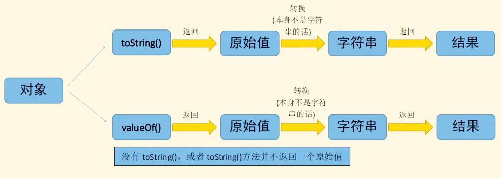

JavaScript的数据类型浅析
1. 数据类型的概述
JavaScript类型可以分为两类：原始类型和对象类型。
1.1 原始类型
- JavaScript的原始类型包括 数值 、文本字符串（也称字符串）和 布尔真值（也称布尔值）。
- JavaScript中的特殊值 null 和 undefined 也是原始值，但它们不是数值、字符串或布尔值。这两个值通常被认为是各自特殊类型的唯一成员。
- ES6新增了一种特殊类型 Symbol（符号），用于对语言进行扩展而不破坏向后兼容性。
原始值是固定而简单的值，是存放在栈(stack)中的简单数据段，也就是说，它们的值直接存储在变量访问的位置。
引用值则是比较大的对象，存放在堆(heap)中的对象，也就是说，存储在变量处的值是一个指针(pointer)，指向存储对象的内存处。
所有引用类型都集成自Object。
如果一个值是引用类型的，那么它的存储空间将从堆中分配。由于引用值的大小会改变，所以不能把它放在栈中，否则会降低查询速度。相反，存放变量的栈空间中的值是该对象存储在堆中的地址。地址的大小是固定的，所以把它存放在栈中对变量性能无任何负面影响。
| 栈区stack | 堆区heap | |
|---|---|---|
| 数字(12) | 原始值 | object1 |
| 布尔值(true) | 原始值 | object2 |
| null | 原始值 | object3 |
| undefined | 原始值 | object4 |
| string(‘test’) | 原始值 | object5 |
| symbol | 原始值 | object6 |
| 地址（o） | 引用值→ | object7 |
1.2 对象类型
在JavaScript中，任何不是数值、字符串、布尔值、符号、null和undefined的值都是对象。
对象（也就是对象类型的成员）是 属性 的集合，其中每个属性都有一个名字和一个值（原始值或其他对象）。
- 普通JavaScript对象是一个命名值的无序集合。
- JavaScript自身定义了一种特殊对象，称为数组。数组表示一个数字值的有序集合。
除了基本的
对象和数组之外，JavaScript还定义了其他一些有用的对象类型。
- Set对象表示一组值的集合，Map对象表示键与值的映射。
- 各种“定型数组”（typed array）类型便于对字节数组和其他二进制数据进行操作。
- RegExp类型表示文本模式，可以实现对字符串的复杂匹配、搜索和替换操作。
- Date类型表示日期和时间，支持基本的日期计算。
- Error及其子类型表示JavaScript代码运行期间可能发生的错误。
1.3 数据类型特点
JavaScript的对象类型是可修改的（mutable），而它的原始类型是不可修改的（immutable）。
可修改类型的值可以改变，比如JavaScript程序可以修改对象属性和数组元素的值。
数值、布尔值、符号、null和undefined是不可修改的，以数值为例，修改它是没有意义的。
字符串可以看成字符数组，字符串也是不可修改的。虽然可以按索引访问字符串中的字符，但JavaScript没有提供任何方式去修改已有字符串的字符。
常量和变量可以让我们在程序中使用名字来引用其值。
常量使用const声明，变量使用let（或在较老的JavaScript代码中使用let）声明。
JavaScript常量和变量是无类型的（untyped），声明并不会限定要赋何种类型的值。
2. 数值 Number
2.1 特点
JavaScript的主要数值类型Number用于表示整数和近似实数。JavaScript使用IEEE 754标准[1]定义的64位浮点格式表示数值，这种数值格式可以让我们准确表示-9 007 199 254 740 992（-253）到9 007 199 254 740 992（253）之间的所有整数（含首尾值）。如果你的数值超出了这个范围，那可能会在末尾的数字上损失一些精度。
但要注意，JavaScript中的某些操作（如数组索引和位操作）是以32位整数计算的。当数值真正出现在JavaScript程序中时，就叫作数值字面量（numeric literal）。JavaScript支持几种形式的数值字面量，任何数值字面量前面都可以加上一个减号（-）将数值变成负值。
2.2 数值的进制与表示方法
在JavaScript程序中，基数为10的整数可以直接写成数字序列。
1 | |
除了基数为10的整数字面量之外，JavaScript也支持十六进制（基数是16的）值。十六进制字面量以0x或0X开头，后跟一个十六进制数字字符串。十六进制数字是数字0到9和字母a（或A）到f（或F），a到f表示10到15。下面是十六进制整数字面量的例子：
1 | |
在ES6及之后的版本中，也可以通过二进制（基数为2）或八进制（基数为8）表示整数，分别使用前缀0b和0o（或0B和0O）：
1 | |
| 进制 | 表示方法 | 注意 |
|---|---|---|
| 二进制 | 0b/0B | 默认情况下，JavaScript 内部会自动将八进制、十六进制、二进制转为十进制。 |
| 八进制 | 0o/0O | 如果八进制、十六进制、二进制的数值里面，出现不属于该进制的数字，就会报错。 |
| 十进制 | 无 | 通常来说，有前导0的数值会被视为八进制，但是如果前导0后面有数字8和9，则该数值被视为十进制。 |
| 十六进制 | 0x/0X | 前导0表示八进制，处理时很容易造成混乱。ES5 的严格模式和 ES6，已经废除了这种表示法，但是浏览器为了兼容以前的代码，目前还继续支持这种表示法。 |
浮点字面量可以包含小数点，它们对实数使用传统语法。实数值由数值的整数部分、小数点和数值的小数部分组成。
浮点字面量也可以使用指数记数法表示，即实数值后面可以跟字母e（或E），跟一个可选的加号或减号，再跟一个整数指数。这种记数法表示的是实数值乘以10的指数次幂。
简明格式：
[digits][.digits][(E/e)[(+/-)]digits]
1 | |
以下两种情况，JavaScript 会自动将数值转为科学计数法表示，其他情况都采用字面形式直接表示：
| 规则 | 实例 |
|---|---|
小数点前的数字大于>21位 | 1234567890123456789012 /=> 1.2345678901234568e+21 |
小数点后0大于>5个 | 0.0000003 /=> 3e-7 |
数值字面量中的分隔符：
可以用下划线将数值字面量分隔为容易看清的数字段：
字节(byte)是计算机中数据处理的基本单位。 计算机中以字节(byte)为单位存储和解释信息，规定一个字节(byte)由八个二进制位构成，即1个字节等于8个比特（1Byte=8bit）。八位二进制数最小为0000_0000，最大为1111_1111；通常1个字节可以存入一个ASCII码，2个字节可以存放一个汉字国标码。
1 | |
数值字面量中像这样添加下划线还没有成为正式的JavaScript标准。但这个特性已经进入标准化流程的后期，而且已经被所有主流浏览器以及Node实现了。
2.3 数学方法
JavaScript程序的算术操作符包括表示加法的+、表示减法的-、表示乘法的*、表示除法的/和表示取模（除法后的余数）的%。ES2016增加了取幂的**。
幂在数学里表示次方，求幂运算符（**）返回将第一个操作数加到第二个操作数的幂的结果(a ** b = ab)。
**等效于Math.pow(a,b)，不同之处在于它也接受 BigInts 作为操作数。
**是右结合的: a ** b ** c 等于 a ** (b ** c)
在 JavaScript里，不能将一个一元运算符（+/-/~/!/delete/void/typeof）放在基数前，会导致一个语法错误。
1 | |
除了上述基本的算术操作符之外，JavaScript还通过Math对象的属性提供了一组函数和常量，以支持更复杂的数学计算：
1 | |
2.4 特殊数值
1、JavaScript中的算术在遇到上溢出、下溢出或被零除时不会发生错误。
在数值操作的结果超过最大可表示数值时（上溢出），结果是一个特殊的无穷值Infinity。
2、当某个负数的绝对值超过了最大可表示负数的绝对值时，结果是负无穷值-Infinity。
这两个无穷值的行为跟我们的预期一样：任何数加、减、乘、除无穷值结果还是无穷值（只是符号可能相反）。
1 | |
3、下溢出发生在数值操作的结果比最小可表示数值更接近0的情况下。此时，JavaScript返回0。如果下溢出来自负数，JavaScript返回一个被称为“负零”的特殊值。这个值与常规的零几乎完全无法区分，几乎所有场合，正零和负零都会被当作正常的0。唯一有区别的场合是，+0或-0当作分母，返回的值是不相等的。
1 | |
4、被零除在JavaScript中不是错误，只会简单地返回无穷(infinity)或负无穷(-infinity)。
5、不过有一个例外：0/0是没有意义的值，这个操作的结果是一个特殊的“非数值”（NaN，Not a Number）。此外，无穷除无穷(infinity/infinity)、负数平方根(Math.sqrt(-x))或者用无法转换为数值的非数值作为算术操作符的操作数，结果也都是NaN。
1 | |
6、需要注意的是，NaN不是独立的数据类型，而是一个特殊数值，它的数据类型依然属于Number，使用typeof运算符可以看得很清楚。
1 | |
7、NaN在布尔运算时被当作false。
1 | |
8、NaN与任何数（包括它自己）的运算，得到的都是NaN。
1 | |
2.5 与数值相关的全局方法
JavaScript预定义了全局常量Infinity和NaN以对应正无穷和非数值。这些值也可以通过Number对象的属性获取：
parseInt()
1、基本用法：
parseInt方法用于将字符串转为整数。
1 | |
如果字符串头部有空格，空格会被自动去除。
1 | |
如果parseInt的参数不是字符串，则会先转为字符串再转换。
1 | |
字符串转为整数的时候，是一个个字符依次转换，如果遇到不能转为数字的字符，就不再进行下去，返回已经转好的部分。
1、parseInt的参数都是字符串，结果只返回字符串头部可以转为数字的部分。
2
3
4
5parseInt('8a') // 8
parseInt('12**') // 12
parseInt('12.34') // 12
parseInt('15e2') // 15
parseInt('15px') // 152、如果字符串的第一个字符不能转化为数字（后面跟着数字的正负号除外），返回NaN。
2
3
4
5parseInt('abc') // NaN
parseInt('.3') // NaN
parseInt('') // NaN
parseInt('+') // NaN
parseInt('+1') // 1
parseInt的返回值只有两种可能，要么是一个十进制整数，要么是NaN。
1 | |
2、进制转换：
parseInt方法还可以接受第二个参数（2到36之间），表示被解析的值的进制，返回该值对应的十进制数。默认情况下，parseInt的第二个参数为10，即默认是十进制转十进制。
1 | |
如果parseInt的第一个参数不是字符串，会被先转为字符串。这会导致一些令人意外的结果。
1 | |
上面代码中，十六进制的0x11会被先转为十进制的17，再转为字符串。然后，再用36进制或二进制解读字符串17，最后返回结果43和1。
这种处理方式，对于八进制的前缀0，尤其需要注意。
1 | |
上面代码中，第一行的011会被先转为字符串9，因为9不是二进制的有效字符，所以返回NaN。如果直接计算parseInt(‘011’, 2)，011则是会被当作二进制处理，返回3。
JavaScript 不再允许将带有前缀0的数字视为八进制数，而是要求忽略这个0。但是，为了保证兼容性，大部分浏览器并没有部署这一条规定。
parseFloat()
parseFloat方法用于将一个字符串转为浮点数。
1 | |
1. 如果字符串符合科学计数法，则会进行相应的转换。
1 | |
2. 如果字符串包含不能转为浮点数的字符，则不再进行往后转换，返回已经转好的部分。
1 | |
3. parseFloat方法会自动过滤字符串前导的空格。
1 | |
4. 如果参数不是字符串，则会先转为字符串再转换。
1 | |
5. 如果字符串的第一个字符不能转化为浮点数，则返回NaN。
1 | |
这些特点使得parseFloat的转换结果不同于Number函数:
1 | |
isNaN()
isNaN方法可以用来判断一个值是否为NaN。
1 | |
isNaN只对数值有效，如果传入其他值，会被先转成数值。比如，传入字符串的时候，字符串会被先转成NaN，所以最后返回true，这一点要特别引起注意。也就是说，isNaN为true的值，有可能不是NaN，而是一个字符串。
1 | |
出于同样的原因，对于对象和数组，isNaN也返回true。
1 | |
但是，对于空数组和只有一个数值成员的数组，isNaN返回false。
1 | |
因此，使用isNaN之前，最好判断一下数据类型。
1 | |
判断NaN更可靠的方法是，利用NaN为唯一不等于自身的值的这个特点，进行判断。
1 | |
isFinite()
isFinite方法返回一个布尔值，表示某个值是否为正常的数值。
1 | |
除了Infinity、-Infinity、NaN和undefined这几个值会返回false，isFinite对于其他的数值都会返回true。
2.6 Number对象的属性
| 全局对象 | 结果释义 | 对应Number属性 | 结果释义 |
|---|---|---|---|
| Infinity | 因为太大而无法表示的正数 | Number.POSITIVE_INFINITY | 相同 |
| -Infinity | 因为太大而无法表示的负数 | Number.NAGATIVE_INFINITY | 相同 |
| 1/0 | Infinity | Number.MAX_VALUE *2 | Infinity;溢出 |
| -1/0 | -Infinity | -Number.MAX_VALUE *2 | -Infinity; |
| NaN | 非数值 | Number.NaN | 非数值；与全局写法不同而已 |
| 0/0 | NaN | Infinity/Infinity | NaN |
| Number.MIN_VALUE / 2 | 0;下溢出 | -Number.MIN_VALUE/2 | -0 |
| -1/Infinity | -0 | -0 /Infinity | -0 |
ES6新增Number属性
| ES6定义的属性 | 对应全局函数 | 属性释义 |
|---|---|---|
| Number.parseInt() | parseInt() | 一致 |
| Number.parseFloat() | parseFloat() | 一致 |
| Number.isNan() | isNaN() | 判断是不是NaN,在参数是NaN时，或者在参数是无法转换为数值的非数值时返回true |
| Number.isFinite() | isFinite() | Number.isFinite()在参数不是NaN、Infinity或-Infinity时返回true。 全局isFinite()函数在参数是有限数或者可以转换为有限数时返回true |
| Number.isInteger() | 用来判断给定的参数是否为整数。 注意 NaN 和正负 Infinity 不是整数 |
|
| Number.isSafeInteger() | 用来判断传入的参数值是否是一个“安全整数”,安全整数范围为 -(2^53 - 1) 到 2^53 - 1 之间的整数，包含 -(2^53 - 1) 和 2^53 - 1 | |
| Number.MIN_SAFE_INTEGER | -(2^53 - 1) | |
| Number.MAX_SAFE_INTEGER | (2^53 - 1) | |
| Number.EPSILON | 表示 1 与Number可表示的大于 1 的最小的浮点数之间的差值 (可理解为两个数值之间最小的误差值，例如，0.1+0.2!=0.3,但是，如果0.1+0.2-0.3 < Number.EPSILON的话，即可证明0.1+0.2===0.3)；不必创建Number对象可直接使用。 EPSILON 属性的值接近于 2.2204460492503130808472633361816E-16，或者 2^-52； |
2.7 通过BigInt表示任意精度整数
BigInt的介绍
-
什么是BigInt?
BigInt是一种新的数据类型，用于当整数值大于Number数据类型支持的范围时。这种数据类型允许我们安全地对大整数执行算术操作，表示高分辨率的时间戳，使用大整数ID等等，而不需要使用库。也就是说，BigInt 可以表示任意大的整数。 -
为什么需要BigInt?
在JS中，所有的数字都以双精度64位浮点格式表示，那这会带来什么问题呢？
这导致JS中的Number无法精确表示非常大的整数，它会将非常大的整数四舍五入:
一是 数值的精度只能到 53 个二进制位（相当于 16 个十进制位），大于这个范围的整数，JavaScript 是无法精确表示的。确切地说，JS中的 Number类型只能安全地表示-9007199254740991(-(2^53-1))和9007199254740991((2^53-1))，任何超出此范围的整数值都可能失去精度。这使得 JavaScript 不适合进行科学和金融方面的精确计算。
二是 大于或等于2的1024次方的数值，JavaScript 无法表示，会返回Infinity。
1 | |
- 如何创建并使用BigInt？
要创建BigInt，只需要在数字末尾追加n即可。
1 | |
另一种创建BigInt的方法是用BigInt()构造函数。
1 | |
BigInt的应用场景
高精度时间戳
大于 2^53 - 1 的整数的一个应用场景就是高精度时间戳。精确到纳秒级别的时间戳很常见，经常用来记录特定程序的执行事件，以便进行性能分析，BigInt 可以表示高精度时间戳，在后端性能分析、性能调优中发挥作用。
大整数 ID
比如 Twitter 的 id 生成服务(Snowflake 雪花算法)，当 id 持续增长时，就会超出 JS 的安全范围，因此要求同时冗余地返回字符串型的 id。假如有 BigInt 类型就可以直接使用。
总体而言，BigInt 可以表示任意大的整数，目前的使用场景是相对较少的。BigInt 的使用需要注意的点还是非常多的，因而建议仅在值可能大于2^53 时使用 BigInt 类型。目前的兼容性一般，可以考虑使用 JSBI 这个库替代。
BigInt的使用及注意事项
简洁使用如下：
- BigInt 大多数情况下可以像常规数字类型一样使用。
- 为了与 Number 类型进行区分，BigInt 类型的数据必须添加后缀n。
- BigInt 与普通整数是两种值，它们之间并不相等。Number 和 BigInt 可以进行比较，非严格相等。
- 由于 BigInt 与 Number 完全属于两种类型,并且不会进行隐式转换，所以没有办法进行混合运算。想要运算的话，必须将两种数据类型转换为同一种类型后，方可进行计算。因为隐式类型转换可能丢失信息，当混合使用大整数和浮点数时，结果值可能无法由BigInt或Number精确表示。建议仅在值可能大于2^53 时使用 BigInt 类型。
- BigInt 不支持一元加法。一元加法运算符
+value，是大家熟知的将value转换成数字类型的方法。为了避免混淆，在 bigint 中不支持一元加法。typeof检测BigInt对象返回bigint字符串。- 当
Boolean类型与BigInt类型相遇时，BigInt的处理方式与Number类似，换句话说，只要不是 0n，BigInt就被视为truthy的值。- 元素都为
BigInt的数组可以进行sort排序。排序BigInts和 numbers数组时，不会发生隐式类型转换。BigInt可以正常地进行位运算，如 |、&、> 和 ^。- 不能将
BigInt传递给Web api和内置的JS 函数，这些函数需要一个Number类型的数字，尝试这样做会报TypeError错误；使用 Object、String 等内置对象转换时，类似于 Number数字。- 由于 BigInt 并不是一个构造函数，所以，不能使用 new BigInt() 的方式来构建实例
- 当创建一个 BigInt 的时候，参数必须为整数，否则或报错
1 | |
注意事项：
| 语法点 | 支持度 | 备注 |
|---|---|---|
| +、*、-、**、% | 支持 | |
| / | 不支持 | 会进行向下取整 |
| 单目 (+) 运算符 | 不支持 | |
| >>>（无符号右移） | 不支持 | 因为 BigInt 都是有符号的，最高位表示正负 |
| 位运算（除了无符号右移） | 支持 | |
| Math 对象方法 | 不支持 |
2.8 日期和时间的数值表示形式
JavaScript为表示和操作与日期及时间相关的数据而定义了简单的Date类。
JavaScript的Date是对象，但也有数值表示形式，即自1970年1月1日起至今的毫秒数，也叫时间戳：
1 | |
3. 字符串 String
- JavaScript中表示文本的类型是String，即字符串。
- 字符串String类型是由引号括起来的一组由16位Unicode字符组成的不可修改的字符有序序列，其中每个值都表示一个Unicode字符。
- 字符串类型常被用于表示文本数据，此时字符串中的每个
元素都被视为一个代码点。每个元素都被认为占有此序列中的一个位置，用非负数值索引这些位置。首字符从位置0开始，第二个字符在位置1，依次类推，字符串的长度即其中元素的个数（包含16位值的个数）。空字符串长度为零，因而不包含任何元素。 - javascript没有表示单个字符的字符型，只有字符串String类型，单个字符的字符型相当于仅包含一个字符的字符串。
3.1 Unicode编码
JavaScript 使用 Unicode 字符集。JavaScript 引擎内部，所有字符都用 Unicode 表示。
JavaScript 不仅以 Unicode 储存字符，还允许直接在程序中使用 Unicode 码点表示字符，即将字符写成\uxxxx的形式，其中xxxx代表该字符的 Unicode 码点。比如，\u00A9代表版权符号。
1 | |
解析代码的时候，JavaScript 会自动识别一个字符是字面形式表示，还是 Unicode 形式表示。输出给用户的时候，所有字符都会转成字面形式。
1 | |
若一个字符串包含实际的文本数据，则每个元素都被认为是一个单独的UTF-16单元。每个字符在 JavaScript 内部都是以16位（即2个字节）的 UTF-16 格式储存。也就是说，JavaScript 的单位字符长度固定为16位长度，即2个字节。
但UTF-16有两种长度：对于码点U+0000到U+FFFF之间的字符，长度为16位(即2个字节)；对于码点U+10000到U+10FFFF之间的字符，长度为32位(即4个字节)，而且前两个字节在0xD800到0xDBFF之间，后两个字节在0xDC00到0xDFFF之间。
举例来说，U+1D306对应的字符𝌆，写成UTF-16就是0xD834 0xDF06。浏览器会正确将这四个字节识别为一个字符，但是javascript内部的字符长度总是固定为16位，会把这四个字节视为两个字符。
1 | |
JavaScript 对 UTF-16 的支持是不完整的，由于历史原因，只支持两字节的字符，不支持四字节的字符。这是因为 JavaScript 第一版发布的时候，Unicode 的码点只编到U+FFFF，因此两字节足够表示了。
后来，Unicode 纳入的字符越来越多，出现了四字节的编码。但是，JavaScript 的标准此时已经定型了，统一将字符长度限制在两字节，导致无法识别四字节的字符。
类似𝌆的四字节字符，浏览器会正确识别这是一个字符，但是 JavaScript 无法识别，会认为这是两个字符。
注意，对于码点在U+10000到U+10FFFF之间的字符，JavaScript 总是认为它们是两个字符（length属性为2）。所以处理的时候，必须把这一点考虑在内，也就是说，JavaScript 返回的字符串长度可能是不正确的。
3.2 引号
字符串String是由双引号(")或单引号(')声明的。而Java则是用双引号声明字符串，用单引号声明字符。由于ECMAScript 没有字符类型，所以可使用这两种表示法中的任何一种，但左右引号必须匹配。
1 | |
由单引号定界的字符串中可以包含双引号，由双引号定界的字符串也可以包含单引号,如果要在单引号字符串的内部，使用单引号，就必须在内部的单引号前面加上反斜杠，用来转义。双引号字符串内部使用双引号，也是如此。
1 | |
javascript中使用单引号表示字符串，在HTML事件处理程序中使用双引号表示字符串。
1 | |
3.3 反斜线'\'
字符串默认只能写在一行内，分成多行将会报错。
1 | |
上面代码将一个字符串分成三行，JavaScript 就会报错。
如果长字符串必须分成多行，可以在每一行的尾部使用反斜杠。
1 | |
上面代码表示，加了反斜杠以后，原来写在一行的字符串，可以分成多行书写。但是，输出的时候还是单行，效果与写在同一行完全一样。注意，反斜杠的后面必须是换行符，而不能有其他字符（比如空格），否则会报错。
连接运算符（+）可以连接多个单行字符串，将长字符串拆成多行书写，输出的时候也是单行。
1 | |
如果想输出多行字符串，有一种利用多行注释的变通方法。
1 | |
上面的例子中，输出的字符串就是多行。
3.4 转义字符
在javascript字符串，反斜线(\)有着特殊的用途，反斜线符号后加一个字符，就不表示它们的字面含义，用来表示一些特殊字符，称为转义字符。
1 | |
上面这些字符前面加上反斜杠，都表示特殊含义。
1 | |
上面代码中，\n表示换行，输出的时候就分成了两行。
反斜杠还有三种特殊用法。
（1）\DDD
反斜杠后面紧跟三个八进制数（000到377），代表一个字符。DDD对应该字符的 Unicode 码点，比如\251表示版权符号。显然，这种方法只能输出256种字符。
（2）\xDD
\x后面紧跟两个十六进制数（00到FF），代表一个字符。HH对应该字符的 Unicode 码点，比如\xA9表示版权符号。这种方法也只能输出256种字符。
（3）\uXXXX
\u后面紧跟四个十六进制数（0000到FFFF），代表一个字符。XXXX对应该字符的 Unicode 码点，比如\u00A9表示版权符号。
下面是这三种字符特殊写法的例子。
1 | |
如果在非特殊字符前面使用反斜杠，则反斜杠会被省略。
1 | |
上面代码中，a是一个正常字符，前面加反斜杠没有特殊含义，反斜杠会被自动省略。
如果字符串的正常内容之中，需要包含反斜杠，则反斜杠前面需要再加一个反斜杠，用来对自身转义。
1 | |
3.5 存储更改
javascript中的字符串是不可变的。一旦字符串被创建，就永远无法改变它。要改变某个变量保存的字符串，首先要销毁原来的字符串，然后再用另一个包含新值的字符串填充该变量。
可以通过+运算符连接其他字符串来创建一个新字符串(Symbol.toPrimitive的抽象操作)
1 | |
以上代码的实际过程是：
首先创建一个能够容纳10个字符的新字符串，然后在这个字符串中填充’java’和’script’，
最后一步是销毁原来的字符串’java’和’script’，因为这两个字符串已经没用了
这个过程在后台发生，也是在某些旧版本浏览器(IE6)拼接字符串速度慢的原因，但浏览器后面版本已经解决了这个低效率问题。
3.6 转换
把一个值转换为字符串有两种方式：toString()和String()，可以使用空字符串"" +某个值，将该值转换为字符串。
toString()和ValueOf()
所有的对象都继承有toString() 和 valueOf() 方法，对象到字符串，对象到数字的转换，会通过调用待转换对象的这两个方法中的一个来完成。
第一种是: 使用几乎每个值都有的toString()方法，它的作用是返回一个表示该对象的字符串。undefined和null没有该方法。
1 | |
JavaScript类型转换表:
| 值 | 转换为字符串 | 数字 | 布尔值 | 对象 |
|---|---|---|---|---|
| undefined | “undefined” | NaN | false | throws ypeError |
| null | “null” | 0 | false | throws ypeError |
| true | “true” | 1 | true | new Boolea(true) |
| false | “false” | 0 | false | new Boolea(false) |
| “” | “” | 0 | false | new String(“”) |
| “1.2” | “1.2” | 1.2 | true | new String(“1.2”) |
| “zero” | “zero” | NaN | true | new String(“zero”) |
| 0 | “0” | 0 | false | new Number(0) |
| -0 | “0” | -0 | false | new Number(-0) |
| NaN | “NaN” | false | new Number(NaN) | |
| Infinity | “Infinity” | true | new Number(Infinity) | |
| -Infinity | “-Infinity” | true | new Number(-Infinity) | |
| 1(无穷大,非零) | “1” | true | new Number(1) | |
| {}(任意对象) | 对象本身 | 对象本身 | true | new Object({}) |
[](数组) |
“” | 0 | true | new Array() |
[0](数组) |
“0” | 0 | true | new Array() |
[0,1,2](数组) |
“0,1,2” | NaN | true | new Array() |
| function(){} | 函数本身 | NaN | true |
很多类定义了更多特定版本的toString()方法。
例如，数组的 toString() 方法是将每个数组元素转换为一个字符串，并在元素之间添加逗号后合并成结果字符串。
函数的 toString() 方法返回了这个函数的实现定义。实际上，这里的实现是通常是将用户定义的函数转换为 JS 源代码字符串。
日期 Date 的 toString() 方法返回了一个可读的日期和时间字符串。
RegExp 的 toString() 方法将RegExp对象转换为表示正则表达式直接量的字符串：
第二种是： 如果对象存在任意原始值，它就默认将对象转换为表示它的原始值，如果对象是复合值，而且大多数对象无法真正表示为一个原始值，因此默认的valueOf()方法简单地返回对象本身，而不是返回一个原始值，更像是输出在js中存储的样子。
数组、函数、和正则表达式简单的继承了这个默认方法，Array,Function,Math 和 Error 对象没有 valueOf 方法，调用这些类型的实例的valueOf( )方法只是简答返回对象本身。
1 | |
每个JavaScript固有对象的 valueOf 方法定义不同。
| 对象 | 返回值 |
|---|---|
| Array | 数组没有valueOf方法，继承的是Object.prototype.valueOf的原始方法，返回数组本身 |
| Boolean | Boolean 值。 |
| Date | 存储的时间是从 1970 年 1 月 1 日午夜开始计的毫秒数 UTC。 |
| Function | 同Array |
| Number | 数字值。 |
| Object | 对象本身。这是默认情况。 |
| String | 字符串值。 |
对象通过使用 toString() 和 valueOf() 方法转化为原始值，JS语言核心的内置类首先尝试使用valueOf()，再尝试使用toString()。需要注意的是，在某些特殊的场景中，JS 执行了完全不同的对象到原始值的转换。
如果传入参数是string，也就是对象到字符串的转换，经过了如下步骤：
如果对象中有toString()方法，则调用这个方法。如果它返回一个原始值(undefined、Boolean、Number、String、BigInt、Symbol 和 null)，js将这个值转换为字符串(如果本身不是字符串的话)，并返回这个字符串结果。
如果对象没有toString()方法，或者toString()没有返回一个原始值，那么js会调用valueOf()方法。如果返回值是原始值，js将这个值转换为字符串，并返回字符串结果。
否则，js抛出一个类型错误异常。

如果传入参数是number/default，也就是对象到数字的转换，经过了如下步骤：
和上面有点不同，到数字的转换会先尝试使用valueOf()方法:
如果对象具有valueOf()方法，后者返回一个原始值，则js会将其转换为数字(如果需要的话)并返回这个数字。
否则，如果对象具有toString()方法，返回一个原始值(字符串直接量)，则js将其转换为数字类型，并返回这个数字。
否则，js抛出一个类型错误异常。
1 | |
1、对于所有`非日期对象`来说，对象到原始值的转换基本上是`对象到数字`的转换。
当调用 valueOf() 方法时，大多数原生对象都会返回对象本身。因此 toString() 方法使用得更频繁。
2、关于 `Date 对象`的注意事项:在转换为原始值时，对象立即使用 `toString() 方法转换为字符串`。
3、普通的 JS 对象，`{}`或 `new object()`，通常被转换成 [object Object]。
4、数组通过将它的元素与“,”分隔符连接转换为。例如 [1,3，"four"] 被转换成" 1,3,four"。
日期对象的特殊情况：日期对象在原型里自定义了toString()，即Date.prototype.toString()。
1 | |
Date 对象覆盖了从 Object 继承来的Object.prototype.toString() 方法。Date的toString() 方法总是返回一个美式英语日期格式的字符串。当一个日期对象被用来作为文本值或用来进行字符串连接时，toString() 方法会被自动调用。
“+” 和 “==” 应用的对象到原始值的转换包含日期对象的一种特殊情形。
日期类是JavaScript语言核心中唯一的预先定义类型，它定义了有意义的向字符串和数字类型的转换。
对于所有非日期的对象来说， 对象到原始值的转换基本上是对象到数字的转换（首先调用valueOf()) , 日期对象则使用对象到字符串的转换模式，然而，这里的转换和上文讲述的井不完全一致：通过valueOf()或toString()返回的原始值将被直接使用，而不会被强制转换为数字或字符串。
和"==" 一样， ＂＜” 运算符以及其他关系运算符也会做对象到原始值的转换， 但要除去日期对象的特殊情形：任何对象都会首先尝试调用valueOf(), 然后调用toString()。不管得到的原始值是否直接使用，它都不会进一步被转换为数字或字符串。
“+”、 “==”、 “!=” 和关系运算符是唯一执行这种特殊的字符串到原始值的转换方式的运算符。 其他运算符到特定类型的转换都很明确，而且对日期对象来讲也没有特殊情况。 例如 " - (减号）运算符把它的两个操作数都转换为数字。
1 | |
字符串连接符与算术隐式转换规则混淆:
1 | |
[] 与 0比较：
（1）[].valueOf().toString() 得到空字符串
（2）Number(“”) == 0 成立
![] 与 0比较：
（1）逻辑非优先级高于关系运算符 ![] = false (空数组转布尔得到true，然后取反得到false)
（2）false == 0 成立
[] 与 ![]比较：
（1） [].valueOf().toString() 得到空字符串 “”
（2） ![] = false
（3） Number(“”) == Number(false) 成立 都是0
[] 与 []比较：
引用类型数据存在堆内存中，栈内存中存储的是地址，所以他们的结果是false
{} 与 !{}比较：
（1） {}.valueOf().toString() 得到字符串’[object Object]’
（2） !{} = false
（3） Number(‘[object Object]’) == Number(false) 不成立，因为转换到最后 是NaN 和 0比较，所以结果为 false
{} 与 {}比较：
引用类型数据存在堆内存中，栈内存中存储的是地址，所以他们的结果是false
1 | |
空对象加空数组就不一样了，加号运算符的定义是这样的：如果其中一个是字符串，另一个也会被转换为字符串，否则两个运算数都被转换为数字。 而同时，javascript有这样的特性，如果{}既可以被认为是代码块，又可以被认为是对象字面量，那么js会把他当做代码块来看待。
这就很好解释了，{}被当做了代码块，只有+[]，根据加法的定义，被转换为0，就得到了结果。
{}和[]的 valueOf() 和 toString() 的结果是什么？
1 | |
String()
在不知道要转换的值是不是undefined或null时，可以使用转型函数String()，转型函数String()遵循下列规则：
- 如果值是null，则返回’null’；如果值是undefined，则返回’undefined’；
- 如果值不是null或undefined，则调用toString()方法并返回原始类型值；
- 若使用toString()方法返回的是对象，则再调用valueOf()方法返回原始类型值，若使用valueOf()方法返回的是对象，会报错。
1 | |
3.7 函数或方法
除了length属性之外，JavaScript还提供了操作字符串的丰富API：
1 | |
JavaScript中的字符串是不可修改的。像replace()和toUpperCase()这样的方法都返回新字符串，它们并不会修改调用它们的字符串。
字符串也可以被当成只读数组，使用方括号而非charAt()方法访问字符串中个别的字符（16位值）：
1 | |
normalize()方法
normalize() 方法会按照指定的一种 Unicode 正规形式将当前字符串正规化。
多欧洲语言有语调符号和重音符号。为了表示它们，Unicode 提供了两种方法。一种是直接提供带重音符号的字符，比如Ǒ（\u01D1）。另一种是提供合成符号（combining character），即原字符与重音符号的合成，两个字符合成一个字符，比如O（\u004F）和ˇ（\u030C）合成Ǒ（\u004F\u030C）。
这两种表示方法，在视觉和语义上都等价，但是 JavaScript 不能识别。
1 | |
ES6 提供字符串实例的normalize()方法，用来将字符的不同表示方法统一为同样的形式，这称为 Unicode 正规化。
1 | |
normalize方法可以接受一个参数来指定normalize的方式，参数的四个可选值如下：
NFC，默认参数，表示“标准等价合成”（Normalization Form Canonical Composition），返回多个简单字符的合成字符。所谓“标准等价”指的是视觉和语义上的等价。
NFD，表示“标准等价分解”（Normalization Form Canonical Decomposition），即在标准等价的前提下，返回合成字符分解的多个简单字符。
NFKC，表示“兼容等价合成”（Normalization Form Compatibility Composition），返回合成字符。所谓“兼容等价”指的是语义上存在等价，但视觉上不等价，比如“囍”和“喜喜”。（这只是用来举例，normalize方法不能识别中文。）
NFKD，表示“兼容等价分解”（Normalization Form Compatibility Decomposition），即在兼容等价的前提下，返回合成字符分解的多个简单字符。
1 | |
normalize方法目前不能识别三个或三个以上字符的合成。这种情况下，还是只能使用正则表达式，通过 Unicode 编号区间判断。
3.8 模板字面量
ES6引入了一种新型的字符串字面量，模板字面量（Template Literal）是一种能够嵌入表达式的格式化字符串，有别于普通字符串，它使用反引号（`）包裹字符序列，而不是双引号或单引号。模板字面量包含特定形式的占位符（${expression}），合法的表达式（expression）可以是变量、算术或函数调用，甚至还可以是模板字面量。
许多开发者认为模板是一段可复用的，可重绘的文本，就像大多数模板引擎（Mustache，Handlebars，等等）那样。ES6中使用的 模板 一词也暗含类似的表达，就像一种声明可以被重绘的内联模板字面量的方法，但这种表达并不准确。它更准确的名称应该是：插值型字符串字面量（或者略称为 插值型字面量）。
在ES6引入模板字面量后，就能避免用若干个加号来实现字符串拼接，而改用更为优雅的语法来替代，下面用新旧两种方式分别来组合字符串。
1 | |
如上所示，我们在一系列被翻译为字符串字面量的字符周围使用了 `..` ，但是${..}形式中的任何表达式都将立即内联地被解析和求值。称呼这样的解析和求值的名词就是 插值（interpolation）（比模板要更准确）。
被插值的字符串字面量表达式的结果只是一个老式的普通字符串，赋值给变量greeting。
typeof greeting == "string"展示了为什么不将这些实体考虑为特殊的模板值很重要，因为你不能将这种字面量的未求值形式赋值给某些东西并复用它。${..} 插值型字符串字面量在某种意义上更像是IIFE（立即调用函数表达式[3]），因为它自动内联地被求值。${..} 插值型字符串字面量的结果只不过是一个简单的字符串。
这不仅仅是一种新的字符串字面量语法，因为插值型字符串字面量可以包含任意JavaScript表达式。反引号中字符串字面量最终值的计算，涉及对其中包含的所有表达式求值、将这些表达式的值转换为字符串，然后再把这些字符串与反引号中的字面量组合：
1 | |
位于${..}之间的内容都被当作JavaScript表达式来解释。而位于这对花括号之外的则是常规字符串字面量。括号内的表达式会被求值，然后转换为字符串并插入模板中，替换${..}中的所有内容。
字符串字面量可以包含任意数量的表达式，可以包含任何常规字符串中可以出现的转义字符，也可以跨任意多行而无须特殊转义。下面的字符串字面量包含4个JavaScript表达式、1个Unicode转义序列和至少4个换行符（表达式的值也可能包含换行符）：
1 | |
除非在字面量值中作为明确的转义序列出现，回车字符\r（编码点U+000D）的值或者回车+换行序列\r\n（编码点U+000D和U+000A）的值都会被泛化为一个换行字符\n（编码点U+000A）。但不要担心；这种泛化很少见而且很可能仅会在你将文本拷贝粘贴到JS文件中时才会发生。
插值表达式
在一个插值型字符串字面量中，任何合法的表达式都被允许出现在${..}内部，包括函数调用，内联函数表达式调用，甚至是另一个插值型字符串字面量！
1 | |
当我们组合变量who与字符串s时， 相对于who + "s"，这里的内部插值型字符串字面量`${who}s` 更方便一些。-webkit-${attr}也是同理。
表达式作用域
在${..}中的变量，它的作用域和定义字符串字面量时所处的位置有关，而不是调用时的位置。以下面代码为例:
1 | |
有3个同名的scope变量，分别定义在全局作用域、outer1()函数和inner()函数中，字符串字面量作为一个实参传递给inner()函数，最后在inner()函数中把字符串字面量输出到控制台。
根据前面的作用域规则可知，得到的结果是“current outer”。
如果字符串字面量所处的作用域中没有该变量，那么就会沿着作用域链向上搜索，直到全局作用域为止。
在下面的代码中，注释了outer2()函数中的scope变量，得到的结果为“current global”。
1 | |
再考虑如下代码：
1 | |
在函数bar()内部，字符串字面量.. 被表达的那一刻，可供它查找的作用域发现变量的name的值为"bar"。既不是全局的name也不是foo(…)的name。
换句话说，一个插值型字符串字面量在它出现的地方是它的词法作用域，而不是其他任何方式的动态作用域。
标签模板（标签型模板字面量）
模板字面量虽然强大，但也有它的局限性，例如下面两点：
（1）有可能会遭受XSS（跨站脚本攻击）攻击，因为无法转义HTML中的特殊字符（例如“<”、“>”等）。
（2）不能替代模板引擎（例如Mustache、Handlebars等），因为无法在占位符中使用if、while等语句。
为了解决上述问题，ES6引入了标签模板（Tagged Template）。标签模板并不是模板，而是一种特殊方式的函数调用，如下所示。
1 | |
调用func()函数的时候省略了圆括号，函数名后面直接跟模板字面量，这就是标签模板的调用方式。它一般会包含两个参数，第一个是由没有被替换的部分组成的数组，第二个是剩余参数，包含了所有占位符中的计算结果。
1 | |
我们对上面的代码进行解析，函数名`...`，实质上是一种不需要( … )的特殊函数调用。标签 —— 在字符串字面量.. 之前的函数名（func、foo）部分 —— 是一个应当被调用的函数的值。实际上，它可以是返回函数的任何表达式，甚至是一个返回另一个函数的函数调用，就像：
1 | |
但当作为一个字符串字面量的标签时，函数foo(…)被传入了什么？
第一个参数值 —— 我们称它为strings —— 是一个所有普通字符串的数组（所有被插值的表达式${..}之间的东西）。我们在strings数组中得到两个值：“Everything is “和”!”。
strings后面的参数可以单独命名,但我们通常使用...收集/剩余操作符将所有后续的参数值收集到一个称为values的数组中。
被收集进values数组中的参数值，就是在字符串字面量中已经被求过值的${..}插值表达式的结果。
一个标签型字符串字面量像是一个在插值表达式被求值之后，但是在最终的字符串被编译之前的处理步骤，允许你在从字面量中产生字符串的过程中进行更多的控制。
1 | |
在这个代码段中，tag(..)是一个直通操作，因为它不实施任何特殊的修改，而只是使用reduce(..)来循环遍历，并像一个未打标签的字符串字面量一样，将strings和values拼接/穿插在一起。
那么实际的用法是什么？有许多高级的用法超出了我们要在这里讨论的范围。但这里有一个格式化美元数字的简单想法（有些像基本的本地化）：
1 | |
如果在values数组中遇到一个number值，我们就在它前面放一个"$"并用toFixed(2)将它格式化为小数点后两位有效。否则，我们就不碰这个值而让它直通过去。
raw属性
这里重点提一下raw属性，它也是一个数组，包含了strings数组中的元素所对应的原始信息，相当于为每个元素调用了一次String对象的raw()方法。注意，String.raw()是一个内置的标签模板，在调用时要用特殊的形式。
下面用一个例子来演示String.raw()的功能，先定义一个包含水平制表符（\t）的字符串，然后在第一次输出的时候，“
”和“<\p>”之间会有空格隔开，接着调用String.raw()，再次输出时就能把“\t”也一并显示。其实要在控制台显示第二条注释需要在“\t”前加一条反斜线（即“\t”）做转义，这样才能把“\t”分成两个独立的字符：“\”和“t”，不再有水平制表符的效果。但此处为了便于理解，省略了反斜线。
1 | |
3.9 模式匹配
JavaScript定义了一种被称为正则表达式（或RegExp）的数据类型，用于描述和匹配文本中的字符串模式。RegExp不是JavaScript中的基础类型，但具有类似数值和字符串的字面量语法，因此它们有时候看起来像是基础类型。正则表达式字面量的语法很复杂，它们定义的API也没那么简单。由于RegExp很强大，且常用于文本处理，因此这里先简单地介绍一下。
一对斜杠之间的文本构成正则表达式字面量。这对斜杠中的第二个后面也可以跟一个或多个字母，用于修改模式的含义。例如：
1 | |
RegExp对象定义了一些有用的方法，而字符串也有接收RegExp参数的方法。例如：
1 | |
4. 布尔值 Boolean
布尔值表示真或假、开或关、是或否。这个类型只有两个值：true和false。
布尔值在JavaScript中通常是比较操作的结果。例如：
a===4
以上代码测试变量a的值是否等于数值4。如果是，则返回true；否则返回false。
布尔值在JavaScript常用于控制结构。例如，JavaScript中的if/else语句在布尔值为true时会执行一种操作，而在值为false时会执行另一种操作。我们经常把产生布尔值的比较表达式直接放在使用布尔值的语句中。结果类似如下：
1 | |
以上代码检查a是否等于4，如果等于，则给b加1；否则，给a加1。
JavaScript的任何值都可以转换为布尔值。下面的这些值都会转换为（因而可以被用作）布尔值false：
1 | |
所有其他值，包括所有对象（和数组）都转换为（可以被用作）布尔值true。false和可以转换为它的6个值有时候也被称为假性值（falsy），而所有其他值则被称为真性值（truthy）。在任何JavaScript期待布尔值的时候，假性值都可以当作false，而真性值都可以当作true。
例如，假设变量o要么保存一个对象，要么是值null。可以通过一个if语句像下面这样检测o是否为非空：
1 | |
使用不全等操作符!==比较o和null，求值结果要么是true要么是false。不过，也可以省略比较，直接依赖null是假性值而对象是真性值这个事实：
1 | |
第一种情况下，if语句的主体只有在o不是null时才会被执行。第二种情况没那么严格，只要o不是false或任何其他假性值（如null或undefined），if语句的主体就会执行。哪种if语句适合你的程序取决于你期待o中保存什么值。如果需要区分null和0、“”，那么就应该使用比较表达式。
布尔值有一个toString()方法，可用于将自己转换为字符串"true"或"false"。除此之外，布尔值再没有其他有用的方法了。除了这个极其简单的API，还有三种重要的布尔值操作符。
&&操作符执行布尔与操作，当且仅当两个操作数都为真时，求值结果才是真；任何一个操作数为假，结果都为假。||操作符执行布尔或操作，任何一个操作数为真，求值结果就是真；只有当两个操作数均为假时，结果才是假。- 一元的
！操作符执行布尔非操作，如果操作数是假则结果为true；如果操作数是真则结果为false。
1 | |
5. null和undefined
null是一个语言关键字，求值为一个特殊值，通常用于表示某个值不存在。对null使用typeof操作符返回字符串"object"，表明可以将null看成一种特殊对象，表示“没有对象”。但在实践中，null通常被当作它自己类型的唯一成员，可以用来表示数值、字符串以及对象“没有值”。多数编程语言都有一个与JavaScript的null等价的值，比如NULL、nil或None。
JavaScript中的undefined也表示值不存在，但undefined表示一种更深层次的不存在。具体来说，变量的值未初始化时就是undefined，在查询不存在的对象属性或数组元素时也会得到undefined。另外，没有明确返回值的函数返回的值是undefined，没有传值的函数参数的值也是undefined。undefined是一个预定义的全局常量（而非像null那样的语言关键字，不过在实践中这个区别并不重要），这个常量的初始化值就是undefined。对undefined应用typeof操作符会返回"undefined"，表示这个值是该特殊类型的唯一成员。
抛开细微的差别，null和undefined都可以表示某个值不存在，经常被混用。相等操作符==认为它们相等（要区分它们，必须使用全等操作符===）。因为它们俩都是假性值，在需要布尔值的情况下，它们都可以当作false使用。null和undefined都没有属性或方法。事实上，使用.或[]访问这两个值的属性或方法会导致TypeError。
我认为可以用undefined表示一种系统级别、意料之外或类似错误的没有值，可以用null表示程序级别、正常或意料之中的没有值。实际编码中，我会尽量避免使用null和undefined，如果需要给某个变量或属性赋这样一个值，或者需要向函数传入或从函数中返回这样一个值，我通常使用null。有些程序员则极力避免使用null，而倾向于使用undefined。
6. 符号 Symbol
符号（Symbol）是ES6新增的一种原始类型，用作非字符串的属性名。ES5 的对象属性名都是字符串，每个属性都有一个名字和一个值，这容易造成属性名的冲突。比如，你使用了一个他人提供的对象，但又想为这个对象添加新的方法（mixin 模式），新方法的名字就有可能与现有方法产生冲突。但在ES6和之后的版本中，符号也可以作为属性名，保证每个属性的名字都是独一无二的，这样就从根本上防止属性名的冲突。这就是 ES6 引入Symbol的原因。
创建
符号没有字面量形式，只能通过Symbol()函数创建。该函数有一个可选的参数，只是用来描述当前符号，除了便于阅读之外，没有其他用途。由此可知，即使两个符号的描述相同，它们还是不能画等号。
注意，Symbol()不是构造函数，因此不能和new运算符组合使用，否则会抛出类型错误。这是因为生成的 Symbol 是一个原始类型的值，不是对象。也就是说，由于 Symbol 值不是对象，所以不能添加属性。基本上，它是一种类似于字符串的数据类型。
下面用一个例子展示符号的创建。
1 | |
上面代码中，sym1和sym2是两个 Symbol 值。如果不加参数，它们在控制台的输出都是Symbol()，不利于区分。有了参数以后，就等于为它们加上了描述，输出的时候就能够分清，到底是哪一个值。
如果 Symbol 的参数是一个对象，就会调用该对象的toString方法，将其转为字符串，然后才生成一个 Symbol 值。
1 | |
如果要识别一个变量是否为符号，可以用typeof运算符。ES6扩展了它，当检测到符号时，能返回一个新的类型字符串“symbol”，如下所示。
1 | |
Symbol.prototype.description
创建 Symbol 的时候，可以添加一个描述。
1 | |
上面代码中，sym的描述就是字符串foo。
但是，读取这个描述需要将 Symbol 显式转为字符串，即下面的写法。
1 | |
上面的用法不是很方便。ES2019 提供了一个实例属性description，直接返回 Symbol 的描述。
1 | |
符号在类型转换时表现得并不灵活，它无法与数字或字符串进行运算，也无法显式的转换成数字。不过，符号可以显式的转换成字符串或布尔值。
1 | |
Symbol 属性
与基本字符串值如何不是String的实例的原理很相似，symbol也不是Symbol的实例。如果要为一个symbol值构建一个封箱的包装器对像，可以做如下的事情：
1 | |
在这个代码段中的symObj和sym是可以互换使用的；两种形式可以在symbol被用到的地方使用。没有太多的理由要使用封箱的包装对象形式（symObj），而不用基本类型形式（sym）。和其他基本类型的建议相似，使用sym而非symObj可能是最好的。
Symbol('name')本身的描述name这个值是隐藏且不可取得的，那么拥有一个symbol还有什么意义？
由于每一个 Symbol 值都是不相等的，这意味着 Symbol 值可以作为标识符，用于对象的属性名，就能保证不会出现同名的属性。这对于一个对象由多个模块构成的情况非常有用，能防止某一个键被不小心改写或覆盖。
1 | |
上面代码通过方括号结构和Object.defineProperty，将对象的属性名指定为一个 Symbol 值。
注意，Symbol 值作为对象属性名时，不能用点运算符。
1 | |
上面代码中，因为点运算符后面总是字符串，所以不会读取mySymbol作为标识名所指代的那个值，导致a的属性名实际上是一个字符串，而不是一个 Symbol 值。
同理，在对象的内部，使用 Symbol 值定义属性时，Symbol 值必须放在[]方括号之中。
1 | |
上面代码中，如果s不放在方括号中，该属性的键名就是字符串s，而不是s所代表的那个 Symbol 值。
Symbol 类型还可以用于定义一组常量，保证这组常量的值都是不相等的。
1 | |
常量使用 Symbol 值最大的好处，就是其他任何值都不可能有相同的值了，因此可以保证上面的switch语句会按设计的方式工作。
还有一点需要注意，Symbol 值作为属性名时，该属性还是公开属性，不是私有属性。
1 | |
在需要使用像"event.login"这样的一般字符串字面量的地方可以使用EVT_LOGIN替代：
1 | |
这样做的好处是，EVT_LOGIN有一个不能被其他任何值所（有意或无意地）覆盖的值，所以在任意事件被分发或处理的问题上不会发生任何冲突。
这段代码运行时，evthub函数使用了EVT_LOGIN参数值的symbol值作为某个跟踪事件处理器的内部对象的属性/键。如果evthub需要将symbol值作为一个真实的字符串使用，需要使用String(…)或者toString(…)进行明确强制转换，因为symbol无法显示转换。
消除魔术字符串
魔术字符串指的是，在代码之中多次出现、与代码形成强耦合的某一个具体的字符串或者数值。风格良好的代码，应该尽量消除魔术字符串，改由含义清晰的变量代替。
1 | |
上面代码中，字符串 Triangle 就是一个魔术字符串。它多次出现，与代码形成 “强耦合”，不利于将来的修改和维护。
常用的消除魔术字符串的方法，就是把它写成一个变量。
1 | |
上面代码中，我们把 Triangle 写成 shapeType 对象的 triangle 属性，这样就消除了强耦合。
如果仔细分析，可以发现 shapeType.triangle 等于哪个值并不重要，只要确保不会跟其他 shapeType 属性的值冲突即可。因此，这里就很适合改用 Symbol 值。
1 | |
上面代码中，除了将 shapeType.triangle 的值设为一个 Symbol，其他地方都不用修改。
属性名的遍历
Symbol 作为属性名，遍历对象的时候，该属性不会出现在for...in、for...of循环中，也不会被Object.keys()、Object.getOwnPropertyNames()、JSON.stringify()返回。
但是，它也不是私有属性，有一个Object.getOwnPropertySymbols()方法，可以获取指定对象的所有 Symbol 属性名。该方法返回一个数组，成员是当前对象的所有用作属性名的 Symbol 值。
1 | |
上面代码是Object.getOwnPropertySymbols()方法的示例，可以获取所有 Symbol 属性名。
下面是另一个例子，Object.getOwnPropertySymbols()方法与for...in循环、Object.getOwnPropertyNames方法进行对比的例子。
1 | |
上面代码中，使用for…in循环和Object.getOwnPropertyNames()方法都得不到 Symbol 键名，需要使用Object.getOwnPropertySymbols()方法。
另一个新的 API，Reflect.ownKeys()方法可以返回所有类型的键名，包括常规键名和 Symbol 键名。
1 | |
由于以 Symbol 值作为键名，不会被常规方法遍历得到。我们可以利用这个特性，为对象定义一些非私有的、但又希望只用于内部的方法。
1 | |
上面代码中，对象x的size属性是一个 Symbol 值，所以Object.keys(x)、Object.getOwnPropertyNames(x)都无法获取它。这就造成了一种非私有的内部方法的效果。
全局共享
ES6会在内部维护一张全局符号注册表，通过Symbol.for()方法，可以登记指定符号，使其变成一个全局有效地符号，从而达到全局共享。该方法只接收一个参数，这个参数既是注册表中的键值，同时也是此符号的描述。下面的代码调用了两次Symbol.for()方法，传递了相同的参数，返回的却是同一个全局符号。
1 | |
在上面的代码中，第一次调用Symbol.for()方法时，会在注册表中搜索键值为“name”的符号，由于没有找到，所以就会创建一个新的符号。而在第二次调用Symbol.for()方法时，由于传递的键值与前一次相同，因此会返回刚刚的那个符号。从而可知，对变量sym1和sym2进行全等比较，返回的结果将是true。
Symbol.for()与Symbol()这两种写法，都会生成新的 Symbol。它们的区别是，前者会被登记在全局环境中供搜索，后者不会。Symbol.for()不会每次调用就返回一个新的 Symbol 类型的值，而是会先检查给定的key是否已经存在，如果不存在才会新建一个值。比如，如果你调用Symbol.for("cat")30 次，每次都会返回同一个 Symbol 值，但是调用Symbol("cat")30 次，会返回 30 个不同的 Symbol 值。
1 | |
上面代码中，由于Symbol()写法没有登记机制，所以每次调用都会返回一个不同的值。
如果要获取某个全局符号所对应的键值（即它的描述），那么可以通过Symbol.keyFor()实现，具体操作如下所示。
1 | |
上面代码中，变量sym2属于未登记的 Symbol 值，所以返回undefined。
注意，Symbol.for()为 Symbol 值登记的名字，是全局环境的，不管有没有在全局环境运行。
1 | |
上面代码中，Symbol.for('foo')是函数内部运行的，但是生成的 Symbol 值是登记在全局环境的。所以，第二次运行Symbol.for('foo')可以取到这个 Symbol 值。
Symbol.for()的这个全局登记特性，可以用在不同的 iframe 或 service worker 中取到同一个值。
1 | |
上面代码中，iframe 窗口生成的 Symbol 值，可以在主页面得到。
内置的 Symbol 值
除了定义自己使用的 Symbol 值以外，ES6 还提供了 11 个内置的 Symbol 值，指向语言内部使用的方法。
Symbol.hasInstance
对象的Symbol.hasInstance属性，指向一个内部方法。当其他对象使用instanceof运算符，判断是否为该对象的实例时，会调用这个方法。比如，foo instanceof Foo在语言内部，实际调用的是Foo[Symbol.hasInstance](foo)。
1 | |
上面代码中，MyClass是一个类，new MyClass()会返回一个实例。该实例的Symbol.hasInstance方法，会在进行instanceof运算时自动调用，判断左侧的运算子是否为Array的实例。
下面是另一个例子。
1 | |
Symbol.isConcatSpreadable
对象的Symbol.isConcatSpreadable属性等于一个布尔值，表示该对象用于Array.prototype.concat(方法用于合并两个或多个数组。此方法不会更改现有数组，而是返回一个新数组。)时，是否可以展开。
1 | |
上面代码说明，数组的默认行为是可以展开，Symbol.isConcatSpreadable默认等于undefined。该属性等于true时，也有展开的效果。
类似数组的对象正好相反，默认不展开。它的Symbol.isConcatSpreadable属性设为true，才可以展开。
1 | |
Symbol.isConcatSpreadable属性也可以定义在类里面。
1 | |
上面代码中，类A1是可展开的，类A2是不可展开的，所以使用concat时有不一样的结果。
注意，Symbol.isConcatSpreadable的位置差异，A1是定义在实例上，A2是定义在类本身，效果相同。